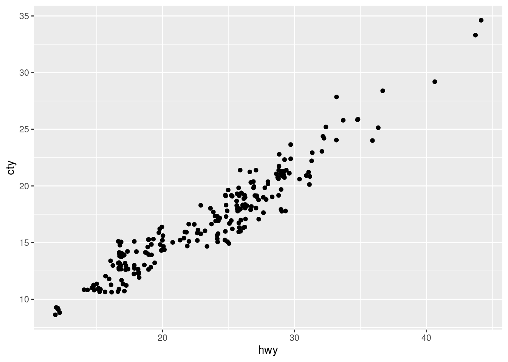

library(ggplot2)
mpg |>
ggplot(aes(hwy, cty)) +
geom_jitter()
Albert Rapp
July 31, 2022
If you enjoyed this post, then you may also enjoy my biweekly newsletter. Every other week I share thoughts on data visualization, statistics and Shiny web app development.